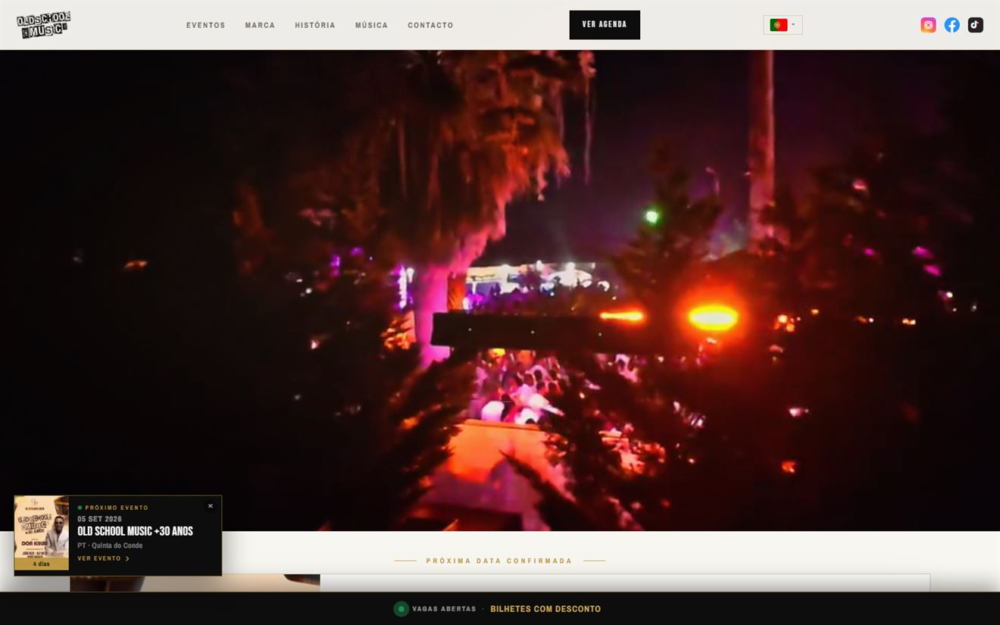

Projetos / Old School Music
Old School Music
Site de uma casa de eventos musicais, com agenda, página própria por evento e três idiomas.

Resumo
O que é este projeto?
O site oficial da Old School Music, uma casa de eventos musicais em Portugal, publicado no domínio próprio oldschoolmusic.pt. Reúne a agenda de eventos, uma página dedicada a cada evento, a apresentação da marca e um leitor de música integrado.
Problema
Qual o problema que precisava ser resolvido?
A divulgação dependia das redes sociais. Um evento vivia dentro de uma publicação: não tinha endereço próprio para partilhar, não podia ser indexado pelo Google e desaparecia do feed ao fim de dias.
Havia também a questão do público estrangeiro, numa casa que recebe visitantes que não falam português.
Solução
Como o sistema resolve esse problema?
Cada evento passou a ter a sua própria página, num endereço estável que se partilha e que os motores de busca conseguem ler. Essas páginas não são escritas à mão: um script gera a pasta e o conteúdo de cada evento a partir da agenda, o que evita divergências entre a lista e a página.
O site é estático, sem framework, uma decisão tomada pelo contexto de uso — muitas visitas acontecem no telemóvel, em dados móveis, à porta do evento. As páginas de evento incluem dados estruturados, para o Google apresentar data e local diretamente nos resultados.
Meu papel
O que eu desenvolvi?
Participação no desenvolvimento, em colaboração com o proprietário. Do total de 110 commits do repositório, 98 são meus, no site, no sistema de geração de páginas de evento, na versão multilingue e no trabalho de SEO.
Faço a manutenção mensal do site. Novos eventos, atualizações, correções e acompanhamento contínuo — é um trabalho a decorrer, não um projeto entregue e encerrado.
Principais funcionalidades
- Agenda de eventos com destaque para a próxima data e arquivo dos eventos passados.
- Página própria por evento, gerada por script a partir da agenda, com endereço estável e partilhável.
- Três idiomas — português, inglês e francês — com estrutura de URLs separada por idioma.
- Dados estruturados nas páginas de evento, para data e local aparecerem nos resultados de pesquisa.
- Instalável como app, com service worker e política de cache versionada.
- Leitor de música integrado nas páginas do site.
- Indexação configurada no Google Search Console, no Bing e via IndexNow.
Resultado
O site está em produção no domínio próprio, servido por Cloudflare Pages, e continua ativo — a agenda é atualizada à medida que novos eventos são marcados.
Deixou de existir dependência das redes sociais para divulgar um evento: cada data tem agora um endereço que pode ser partilhado, encontrado numa pesquisa e mantido no tempo.